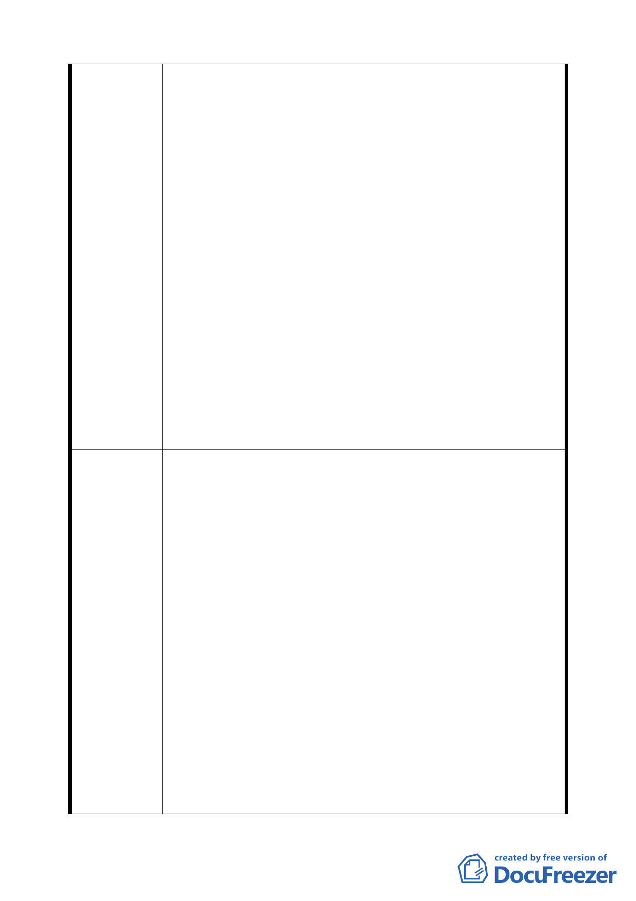

建議取消不允許第 41 組一般旅館業、第 42 組國際觀光旅
館使用，回歸台北市土地使用分區管制規則第三種住宅區及
住三之一之規定。
6.新計畫「住宅區建蔽率減少 5％規定」部分：
建議仍維持原計畫住宅區建蔽率之規定，若為考量地面雨
水之滲透率及植栽，可透過設計手法加強之。
7.「R1 街廓」部分：
建議 R1 街廓臨南港路及經貿二路 30 公尺進深範圍，容積
率為 300％，建築基地臨接道路面寬在 16 公尺以下者，其
容積率仍為 225％。
8.「時程獎勵」部分：
建議開發時程第一期獎勵調整從 97 年新計畫發佈實施日起
算，以此類推第二期及第三期。
9.「最小建築基地」部分：
建議如Ｃ2 及Ｃ3 土地面積大之街廓，其建築基地最小面積
應修正為 1/2 街廓，以利整體規劃，分期分區開發。
10.新計畫「住宅區地下開挖率減少 5％之規定」部分：
建議維持原計畫住宅區之地下開挖率。
1.同意發展局所提「為滿足經貿園區會展衍生之旅館、購物
與娛樂需求，C2、C3 街廓仍宜規範主體使用比例」，維持
原公展計畫。
2.同意發展局所提「為滿足經貿園區會展衍生之旅館、購物
與娛樂需求，C2、C3 街廓仍宜規範主體使用比例」，維持
原公展計畫。
3.同意發展局所提「為維持高品質商務機能，商業區不宜放
寬作住宅使用」，維持原公展計畫。
委員會決議 4.同意陳情民眾所提建議，取消住宅區住宅使用樓地板不得
少於 2/3 以上之規定。
5.同意陳情民眾所提建議，取消住宅區不允許作旅館使用之
規定。
6.同意發展局所提「為落實生態設計理念，加強雨水滲透及
植栽設計，本市土地使用分區管制規則已於 88 年調降全市
各使用分區之建蔽率，爰配合修訂本計畫住宅區比照該規
則第二種、第三種住宅區之建蔽率，惟如依調整後之建蔽
率無法用畢法定容積者，建蔽率得再放寬 5%」，維持原公
28